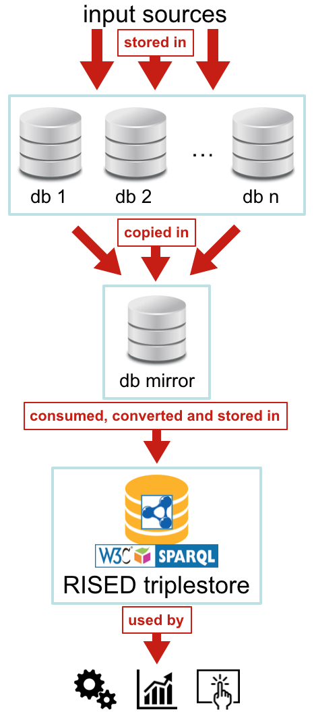

With the advent of the fourth industrial revolution, several enterprises worldwide have started to evolve their production processes with new automation and data exchange policies by means of the adoption of emergent technologies, i.e. knowledge graphs, sensor networks, big data, and cloud computing. While several domains have been already involved in this revolution, others, such as the fast-fashion industries, have started to move the first steps in that direction since few months. In this article we describe the first outcomes of a project, i.e. Refactoring Imperial Selling Data (RISED), which aims at using Semantic Web technologies so as to simplify the management and the enrichment of a huge set of data that are continuously collected by Imperial Fashion, one of the most important fast-fashion companies in Italy. In particular, we introduce the process adopted for the development of a unifying model (i.e. an OWL 2 DL ontology) for the description of all the Imperial Fashion data and we propose some mechanisms for converting the original data stored in existing databases according to the new ontology. Finally, we introduce some prototypical visual tools that use the converted data for addressing some of the questions that have been raised by Imperial Fashion employees during several informal meetings we had about the project RISED.
Introduction
With the advent of the fourth industrial revolution , several enterprises worldwide have started to evolve their production processes with new automation and data exchange policies by means of the adoption of the emergent technologies, i.e., knowledge graphs, sensor networks, big data, and cloud computing. Several industries in Italy have started to be part of this innovative movement. Among those, one domain deserves particular attention, considering the huge amount of costumers it usually involves: fast-fashion. In practice, the term fast-fashion is used to describe fashion designs that move quickly to capture current fashion trends, and it usually targets mainstream consumers proposing clothes at a lower price. While the most famous retailers worldwide are well-known industries and brands (H&M, Zara, Peacocks, Primark, etc.), there is an incremental interest by the customers on these kinds of companies, in particular if they take in consideration the Made in Italy mark.
Imperial Fashion is one of the main Made in Italy fast-fashion industries in Italy. In the last years, it has extended its scope worldwide, and it is taking particular attention to the adoption of new technologies for daily production and decision processes. As part of a formal collaboration between Imperial Fashion and the University of Bologna, started in 2015 under the CreativeLab project, several applicative projects have begun, with the idea of experimenting research approaches from different areas (Information and Computer Technologies, Economics, Statistics, Sociology, Management, and Arts) within the context of the company.
In particular, we are actively involved in one project that focusses on the use of Semantic Web technologies so as to simplify and enrich the huge management of data that are continuously collected by the company. In this context, the main issue is that Imperial Fashion has built an enormous dataset of all their products (mainly clothes) and related contextual information (e.g. selling data) during several years. However, due to technical reasons, the various databases, where the data have been stored, have been created without following a precise, a priori, and shared model. In the current scenario, the data comes from different sources (business to business (B2B) and business to client (B2C) selling data, online and front-desk orders, several distribution platforms, etc.), and each source has been handled by different people, and even by third-party companies. The result is that the whole amount of data is only partially used in all its potential, due to this heterogeneity.
So as to disentangle such a complex situation, Imperial Fashion was looking for a flexible approach that allows them:
to manage and, in particular, to query easily heterogeneous database tables when they actually refer to semantically-homogeneous data;
to run interesting computational analysis on the whole set of data in an efficient way;
to use interfaces that allow users (e.g. production decision makers and people from the communication department) to interact with the data so as to make sense of them and, thus, to ease crucial strategic decision.
In this article we present the solution we have proposed to the company for addressing all the aforementioned issues, and the first outcomes we have produced after the first year of the project, named Refactoring Imperial Selling Data (a.k.a. RISED). Our solution is mainly based on the use of Semantic Web technologies. In fact, we have developed a unifying model (i.e. an OWL 2 DL ontology) for describing and accessing the data. We have also proposed a conversion strategy so as to translate the original data contained in the existing databases accordingly to the ontology developed. Finally, we have implemented some prototypical interfaces to show how the converted data can be visualised so as to maximise their sense-making.
The rest of the paper is organised as follows. In we introduce the main aims of the RISED project and we discuss the proposed solution in the context of Imperial Fashion. In we describe the unifying model we have developed to describe Imperial Fashion data. In we discuss the strategy we have adopted so as to convert the data available in the existing Imperial Fashion databases into RDF according to the ontology developed. In we briefly present some interfaces we have implemented reusing existing libraries for creating interesting and useful representation of RDF-based data. In we discuss some other existing works related to the area. Finally, in we conclude the paper sketching out some future works.
Approaching the refactor of selling data
The use of mechanisms for querying potentially-heterogeneous data by means of a common interface, so as to understand their high-level dynamics, is one of the most important aspects any company should take care of for their business and production processes. In the context of Imperial Fashion, this aspect is even more crucial since it definitely impacts the selling of products. In fact, the time constraints in fast-fashion industries are tight, and taking wrong decisions about what items to produce for the following week can bring to an immediate loss of huge amounts of money.
Imperial Fashion gathers real-time data concerning its catalogue and its sales. However, depending on the particular distribution platform adopted and the sales channel used, such information are stored in different databases. These databases include several heterogeneous tables and can present fragmented data as well. On the one hand, a common unified model (i.e. an ontology) for describing all these data can be derived from the various databases available – and it could simplify the interaction between all the existing databases by hiding the intrinsic complexities derived from the data fragmentation. On the other hand, the creation of such model is not trivial at all, since one should deal with different kinds of domain experts so as to have a clear picture of all the data that are available. Finally, to complicate even more an already complex scenario, there is the need of sharing and communicating the new development direction with the managers of the company – none of whom has a strong technological expertise – so as to urge them to properly support the work with appropriate funds.
A unifying language for describing fast-fashion data
The communication strategy with Imperial managers was the most urgent issue to address, since a quick positive answer from them would have made possible an immediate uptake of the project. Thus, we decided to narrate the whole idea by means of a metaphor using common languages.
A graphical summary of the current scenario at Imperial Fashion. The data contained there can be heterogeneous and, even when homogeneous, they are described in different languages (i.e. by means of different database tables describing semantically-similar data in quite different structural ways). This aspects impact the development and maintenance of tools for the visualisation of, analysis of, and interaction with such data.
We described each database already (or to be) included in the Imperial Fashion information system as if the data it contains are defined by means of a particular language (i.e. Italian, English, Chinese, German, Russian, and Spanish, in the example introduced in ). In this scenario, the data can be semantically-heterogeneous, i.e. referring to different concepts, as well as structurally-heterogeneous, i.e. describing similar concepts by means of different languages.
While the use and analysis of these heterogeneous data is still possible, the effort to put in the development of applications for facilitating the access and the sense-making of the data to humans can be unmanageable. In particular, the long term maintenance of such applications is quite unfeasible. In fact, when a new database has to be included, all the applications developed should be adapted so as to handle the new language properly – and this aspect would have a clear impact in terms of effort, time, and cost for the company.
The new architecture proposed for the management of Imperial Fashion data, based on the use of a unifying common language identified by the Esperanto flag (i.e. the green flag with a small green star on the top-left side enclosed by a white square).
So as to address this issue, we have proposed the use of a unifying language (i.e. the Esperanto in the example provided in ) as a way to describe all the data coming from all the databases, that are converted by means of appropriate interpreters. Such approach would liberate the developed applications that use these data from multilingual dictate of the various databases involved. In addition, it would also facilitate the long-term maintenance of the applications when new databases have to be added to the infrastructure, reducing the amount of work to do for the inclusion to the solely implementation of new interpreters, while leaving the analysis/visualisation/interaction applications as they are in principle – unless new kinds of data (i.e. referring to new concepts) are added.
Requirements and implementation
We have chosen to use Semantic Web technologies so as to implement the approach presented in the previous sub-section. On the one hand, Semantic Web technologies guarantee a good flexibility when one as to merge heterogeneous data. On the other hand, such technologies ease possible future extensions of the data by reusing or linking other information that can even come from external open data datasets – e.g. DBpedia for gathering information about the particular city where an item has been sold, and the Italian Institute of Statistics for demographic information about the population city by city.
Thus, these technologies have been used for:
developing an ontology to describe coherently all the data included in the several Imperial databases, hiding their intrinsic complexities and easing their comprehension by using diagrams and the related natural language documentation;
developing mechanisms for the automatic conversion of the original data into RDF statements compliant with the developed ontology, so as to enable one to query over the whole dataset hiding their complexities derived from the actual structures they have been originally stored within.
While the proposed approach was a success in terms of responsiveness from the company, there have been two strong requirements that Imperial Fashion desires not to be violated:
the existing databases should not be affected directly by experimentation of the RISED project, so as to guarantee the correct sustainability of the current Imperial Fashion information system;
the conversion must not compromise the status of the whole system, and, in particular, it cannot be the cause for any database crash in any way.

The architecture for handling the creation of the RISED triplestore without affecting the load-charge of the existing databases db 1, ..., db n.
The architecture illustrated in has been proposed together with the Imperial Fashion Information and Computer Technology department. It has been studied in order to follow all the aforementioned constraints. Summarising, every time some input data (e.g. selling data) are added to the existing databases, they are copied in a mirror database as well. This database is just a temporal storage for new data, and it is emptied once its data are ingested by the RISED triplestore. This triplestore is the resource that can be queried by the new applications without affecting the common run of the existing information infrastructure – guaranteed by the original databases.
In the following sections, we introduce the methodology and the outcomes of the first year of RISED, which has produced an ontology for uniformly described all the Imperial Fashion data, a conversion strategy based on well-known software extended as needed by our project, and some prototypical interfaces for accessing and browsing an exemplar of existing data.
The Imperial Data Ontology
As already discussed in the previous section, the first goal of the RISED project has been the development of a unifying model, i.e. the Imperial Data Ontology (IDO, https://w3id.org/ido). This ontology is responsible for the description of all the data gathered by the various selling events of the products included in the Imperial Fashion catalogue. The current version of IDO (version 0.5.1) has been released with a Creative Commons Attribution License 4.0, so as to guarantee its reuse in similar contexts by other interested companies. IDO has been created by means of an efficient agile ontology development methodology that has been already used in several applicative domains, which we discuss with more detail in the following subsections. In addition, we also introduce other tools that have been used for producing specific artefacts related to the final model. Thus, we provide a detailed description of all the ontological models developed.
Methods and materials
SAMOD
Several ontology development methodologies have been proposed in the past, such as those developed starting from standard software engineering methodologies (e.g. Neon Methodology and Methontology), and others inspired to novel agile processes (e.g. eXtreme Design). Recently, we have proposed and used a new agile development methodology, experimented in different projects during the past six years.
This methodology is called Simplified Agile Methodology for Ontology Development (SAMOD) . SAMOD is an agile ontology development methodology that allows the creation of an ontology by executing three steps within one or more iterations. The final outcome of each of these iteractions is the formal implementation of the ontology accompanied by additional information, such as documentation, diagrams, and implemented examples, so as to make the whole model easier to understand by the final users.
Each iteration involves two type of users: the Domain Expert (DE) and the Ontology Engineer (OE). Usually, the DE is an expert who has a profound knowledge of the domain described by the ontology to develop. However, she does not usually has appropriate skills in ontology languages nor other Semantic Web technologies. In fact, her main activities are to provide natural language descriptions of the domain to model. The OE, instead, is responsible for the creation of the ontology by means of a specific formal language, such as OWL , starting from the description provided by the DE.
These users are involved in a process (summarised in ) composed by the following three sequential steps, each ending with the release of a snapshot of the current status of the development process called milestone:
The DE helps the OE for collecting all the information on the domain to model, so as to create a small self-contained ontology (called modelet) that describes such domain. In this phase, the DE has to follow some specific ontology modelling principles, so as to include, finally, the modelet in a specific test bed, i.e. a bag of objects that has to be validated and approved for the release and that includes exemplar data compliant with the modelet. Then, if the test bed passes a series of tests without incurring in any meaningful issue, a milestone is released and the process continues to the next step – otherwise the OE has to go back to the previous milestone.
The OE merges the modelet included in the earliest test bed within the current model produced as outcome of the last iteration of SAMOD, changing (if needed) the entities specified in the test bed so as to comply it with the updated model. If these changes do not affect the current status of the test bed, a milestone is released and the process continues to the next step – otherwise one has to come back to the previous milestone.
The OE refactors the current model taking particular attention to the part added in the previous step. In particular, she has to follow specific guidelines and shared practices for ontology development, such as the specification of intelligible annotations for easing the understanding of the ontology by humans, and the reuse of existing ontologies for maximising the ontology reuse. After the refactoring, all the test beds created in the previous steps/iterations must be modified so as to comply with the refactored model. Thus, if all these test beds passes a series of tests without incurring in any issue, a milestone is released and the process either stops or continues with another iteration if needed – otherwise the OE has to go back to the previous milestone.
A summary of the steps of SAMOD, that involve domain experts and ontology engineers in an agile process for the creation of an ontology.
The use of SAMOD in the development of IDO has involved only one OE and several DEs, mainly analysts and people responsible for the Web/e-commerce platform in Imperial Fashion.
Supporting applications
During the use of SAMOD, several applications and tools has been considered for facilitating the creation and understanding of the ontology under-development, in particular:
the Graphical Framework For OWL Ontologies (Graffoo) has been used for the creation of the diagrams of IDO. In particular, it has been adopted during the first and the third step of SAMOD, for creating the modelet diagram and the final diagram of the current model produced as last outcome of an iteration respectively;
the Live OWL Documentation Environment (LODE) has been used for the automatic generation of the natural language documentation in HTML of IDO, which has been created starting from the annotation introduced in the last step of each iteration.
the Diagrams Transformation inTo OWL (DiTTO) has been used for automatically creating the appropriate OWL version of the various modelets starting from their diagram created by means of Graffoo.
Protégé has been used in all the step of each iteration for implementing modification to the current model, for creating the exemplar data compliant with the modelet (step 1) and the current model (steps 2 and 3), and for testing the consistency of the ontology produced.
Fuseki has been used in each step for querying the modelet/current model and the related exemplar data so as to answer to particular requirements expressed as competency questions by the methodology.
Reusing existing models
In the third step of any iteration, SAMOD suggests to adopt existing ontologies if available, so as to maximise the reuse of the ontology under development in different context. Due to the complexity of the domain to address, several models have been considered for inclusion in IDO. However, their adoption had to be regulated by a precise set of guidelines, so as to guarantee a safe reuse of the existing models without making IDO inconsistent and avoiding the addition of axioms that could change the intended semantics of the imported models. In particular, we have considered the following guidelines:
some existing models (i.e. SKOS, FRBR, SIOC, e FOAF) have been imported as a whole (by means of the property owl:imports) if we thought that they could be useful for providing a first foundational skeleton to the ontology;
ontological entities defined in external models (i.e. GoodRelations, Schema.org, and DC Terms, referred via rdfs:isDefinedBy) have been included if we thought they could be useful for the description of particular aspects of the domain. In particular, we have adopted the following inclusion strategy:
if two or more entities (i.e. class and properties) are defined in two or more distinct models (e.g. the classes http://purl.org/goodrelations/v1#PriceSpecification and http://schema.org/PriceSpecification, defined in GoodRelations e Schema.org respectively) and if they are referring to the same concept, then IDO should include a new entity (e.g. the class Price) subsumed by the other two (or more) entities. If such new entity is a property, domain and range classes must be explicitly defined;
if a property defined in an external model is reused with domain and range classes that are not the ones defined originally, the property is included in IDO as it is, and its domain and range classes are explicitly specified if and only if they are already included in IDO (e.g. the property http://schema.org/referencesOrder). Otherwise, the property is included without specifying any particular domain/range class (e.g. the property http://schema.org/validFrom included in IDO). In addition, if the property included involves classes explicitly defined in IDO, they must be subsumed by appropriate restriction so as to clarify explicitly the use of such property in their context (e.g. see the use of the property http://schema.org/validFrom in the context of the class Price);
in both the aforementioned cases, no inverse of the property included must be defined, unless such inverse property already exists in the external model where the property included is defined. Even if this is in contrast with the guidelines introduced by SAMOD, this constraint is needed so as not to change the original conceptualisation of such properties.
Current status
SAMOD has been iterated five times so far. The current structure of IDO is organised in several modules interlinked as shown in ). Each module is responsible for the description of a specific aspect of the domain into consideration.
The modules included in IDO and the import relations that exist among them.
In particular, IDO imports SKOS, FRBR, SIOC, e FOAF, and includes the following modules::
module article categories (ido/aco in the diagram), which describes the categories (t-shirt, trousers, etc.) of all the items included in the Imperial Fashion catalogue;
module prices(ido/prices in the diagram), which enable the description of the prices associated to the items, orders, and invoices;
module items (ido/items in the diagram), which describes the main characteristics of the items such as the model, texture, colour, and size;
module orders (ido/orders in the diagram), which defines the orders and the invoices, and relate them to the ordered items;
module users (ido/users in the diagram), which allows one to describe the people and users registered to the various platform.
All these modules are presented in the following subsections in detail. For each module, an ideal descriptive scenario is introduced, as well as a series of related competency questions the module should answer. We accompany such material with a description of all the ontological entities implemented in the module. In addition, the IDO GitHub repository (https://github.com/essepuntato/ido) contains all the source files of all the modules accompanied by their HTML documentation (directory model, and its subdirectories), as well as examples of usage (directory examples) and the SPARQL queries formalising the competency questions listed in the following sections (directory queries).
Module article categories
Scenario: The catalogue of Imperial Fashion includes a detailed description of all the articles available (identified by a code). Each item is associated to certain category (e.g., shirt, dress, trousers).
Competency questions:
What is the most used category in the catalogue?
Description: We have analysed all the categories that have been used by Imperial Fashion in the past five years, so as to identify the various article types of interest (shirt, trowser, jacket, etc.). This analysis has involved mainly people responsible for the sales of Imperial items through the online platform. Such categories have, thus, been organised in a formal taxonomy (with both Italian and English labels) called the Article Category Ontology (ACO), which describes the article types as individuals of the class ArticleCategory, which is subclass of the class Concept defined by the Simple Knowledge Organization System (SKOS).
Module prices
Scenario: Each item, a related stock keeping unit, or a specific piece of a stock keeping unit, can have three different kinds of prices assigned: COGS (cost of goods sold), sell-in (i.e. the price reserved to retailers), and sell-out (i.e. the price reserved to final customers). Each of these prices can be either gross or net, and can include the VAT. In addition, such prices can also include a discount percentage, if it has been applied.
Consequently, different items of a certain model, as well as different stock keeping units of a particular item or their related pieces, can have different prices associated depending particular contextual characteristics (such as the texture used for a certain item that may cost more than others). In addition, all the prices associated to these objects can vary during time. For instance, an item can cost X at time T, and X+5 at time T+1. Similarly, these prices can vary as well depending on additional contextual reasons, such as the distribution channel used to sell the related items, the season, or other unpredictable parameters.
Questions:
What are the COGS, sell-in and sell-out (net, with VAT) of all the stock keeping units after the 1th of January?
What are the prices of all the pieces that have been bought at a discount price?
How did a COGS of a certain stock keeping unit vary in time?
What is the total amount of all the sold pieces?
Description: The module shown in reuses several classes defined in GoodRelations and Schema.org – even if some are missed in the diagram – and imports the Simple Knowledge Organization System (SKOS) for describing the kinds of price (i.e. gross and net). The main class of the module is Price. It allows the definition of a price (COGS, sell-in, sell-out) and all the information associated to it, in particular:
the amount (property hasPriceValue) and the currency (property hasPriceCurrency) that characterises it, e.g. 156.67 EUR;
the application of a discount percentage (property hasDiscountPrecentage) to a particular price, e.g. 15;
the type of price (property hasPriceType) that can be, e.g., net (the individual net belonging to the class PriceType) or gross (the individual gross);
the inclusion of the VAT (property includesVAT) to the price;
the specification of a validity period (property schema:validFrom and schema:validThrough) and/or of some specific contexts where the price must be applied (property isApplicableFor).
The Graffoo diagram of the module related with prices.
Module items
Scenario: A style is a particular design of an article of a certain category (e.g. shirt, skirt, trowser) and designed for one or more specific genre (male, female, or both). An item is a particular realisation of a style with a certain texture and proposed for a specific season. Each item can be available in different sizes and colours. Any combination of these characteristics defines a stock keeping unit (SKU). Finally, the piece that is produced is an exemplar of a particular stock keeping unit.
Consequently, each style can be realised in several items, each item can be available in different stock keeping units, and each stock keeping unit can be produced in multiple pieces. Styles, items, stock keeping units, pieces, colours, sizes, textures, and seasons can have a unique identifier associated.
Questions:
What is the category of the style, the genre, the season, the texture, the size, and the colour of all the pieces produced?
What are best selling colours?
What is the size of the stock keeping units being black that have been made available for the item with code AMT3ODO?
Description: The module summarised in is entirely based on the classification introduced by the Functional Requirements for Bibliographic Record (FRBR) . FRBR is a metadata standard proposed for the description of bibliographic resources, such as books, articles, journals. However, its organisation is enough generic that can be applied to other kinds of works, such as cultural heritage objects , music , and, of course, fashion design. In particular, FRBR describes each object from four different and interlinked perspectives, defined by the following concepts:
Work, i.e. the description of the essence of a particular object – e.g. the style as thought by a fashion designer;
Expression, i.e., the realization of a Work in a certain shape – e.g., the proposal of an item (e.g. a sketch) to create with a certain texture;
Manifestation, i.e. a particular embodiment of an Expression according to a specific physical format – such as the size and the colour;
Item, i.e. the tangible object compliant with a certain Manifestation and with a precise physical location – e.g. a piece of a stock keeping unit in a cloakroom.
By using FRBR as guiding standard, we have defined four distinct classes for each of the aforementioned FRBR levels:
class Style, i.e. the particular design of a certain article, characterised by a category (property hasArticleCategory) as defined in , and by a genre (male, female, or both);
class Item, i.e. the specific item related to a certain style (property wasRealisedAs) realised using a particular texture (property wasMadeOf), and proposed for a certain season (property wasProposedFor);
class StockKeepingUnit, i.e. a certain item available (property isAvailableAs) in a particular size (property hasSize) and colour (property hasColour);
class Piece, i.e. the piece having a particular size and colour and related to a specific item.
Each of these four classes identifies specific aspects and characteristics of an article. Any individual of these classes can be accompanied by a unique identifier (property dcterms:identifier). In addition, it is possible to associate to the individuals of the classes Item, StockKeepingUnit, and Piece one or more prices (property hasPrice) so as to indicate how such individual is available to the market.
The Graffoo diagram for the module related to the items and their characteristics.
Module orders
Scenario: Any selling mechanism includes the creation of an order (at a certain date), i.e. the specification of the articles that someone wants to order completed with additional information about their characteristics (texture, colour, size), the amount ordered, the price for each piece, and a recap of the total amount needed to buy all the objects indicated in the order. Each order is actually associated to an hypothetical set of items, even if the pieces included in it are immediately available in stock.
When all the pieces ordered are sent to the customer, an invoice is generated and it is associated to a particular order. Each invoice includes all the pieces of the item included in the order that have been actually sent to the customer, their prices, and a recap of the value of the invoice. However, it is possible that the products included in the invoice could be different from those that have been originally ordered.
Both orders and invoices must contain information about the distribution platform used (either B2B or B2C), and the sales channel used (either e-commerce or front-desk).
Questions:
What is the sum of all the orders received in January 2016?
What is the total value of the invoices associated to all the orders received in January 2016?
What is the total cost of each stock keeping unit considering all the orders?
What are all the invoices that specify a total value which is different from the one specified in the related orders?
What are all the invoices that include a piece of a stock keeping unit that was not included in the related orders?
What are the distribution platform and the sales channels used in all the orders?
What is the best selling colour on January 2015?
What is the best selling article on January 2015, and what is the related best-selling colour?
What is the best selling article category on January 2, 2015?
Description: In this module, shown in , we reuse several entities defined in GoodRelations, Schema.org, and DC Terms – even if some of those are not explicitly shown in the diagram. The main class of the module are Order e Invoice, which are linked between them through the property schema:referencesOrder. These two classes are associated to several other concepts so as to provide a detailed description of all the information related to the selling of product. In particular:
each order is characterised by the stock keeping unit ordered (property schema:orderedItem), by their type (property gr:typeOfGood), their amount (property schema:orderQuantity), the price per piece ordered (property hasPricePerPiece), the order date (property schema:orderDate), and the total value of the order (property hasTotalValue);
each invoice is characterised by the pieces sold (property includesPiece), their type (property gr:typeOfGood), the price per piece (property hasPricePerPiece), the invoice date (property dcterms:issued), and the total payment related to the invoice (property schema:totalPaymentDue).
In addition, each order/invoice specifies the distribution platform (property hasDistributionPlatform) as well as the sales channel (property hasSalesChannel) that have been used.
The Graffoo diagram summarising the module related to orders and invoices.
Module users
Scenario: The online sales system allows users of the platform to order an item available as stock keeping unit and to receive it at the specified address (characterised by province and region). Each person having a user account has information associated about her genre, birth date, province and region of residence.
Questions:
Who is the user that has bought the most in 2015?
What is the province where the users have ordered the highest number of articles?
What are the best selling article categories in the various regions?
What is the best selling article category on January 2, 2015, in Lombardia?
Description: In this module, briefly summarised in , we reuse several entities originally defined in Schema.org. In addition, two external models have been explicitly imported, i.e. Friend Of A Friend (FOAF, for describing people) and Semantically-Interlinked Online Communities (SIOC, for describing users). The main classes of the module are:
Person, which allows us to specify birth date, genre and place of residence of all the people described in the platform;
UserAccount, which is a specific customer included in the platform, referring to a person, which is used for making orders in the platform;
schema:Place (defined in Schema.org), which allows us to specify the place where a person stay or where the items included in an order should be sent.
The Graffoo diagram summarising the module users.
Advantages of using a unifying model
As already introduced in the previous sections, the Imperial Data Ontology (IDO) has been proposed as the unifying model for allowing the integration and querying of Imperial Fashion data, which are stored in several databases that can be organised in different ways and can also contain heterogeneous data. The advantages of using IDO within the context of the company is twofolds. On the one hand, it allows us to push the applicative research of Semantic Web technologies in this context even further. On the other hand, it has clear impact at a pure industrial level as well.
From a research perspective, while there already exist models for the description of selling events of products such as GoodRelations, IDO is one of the first that provides a detailed description of the fast-fashion domain, with particular reference to the management of selling and product-related data. In addition, the use of FRBR is one of the first concrete tentative of applying such specification to a domain that was not considered originally by the authors of FRBR – which basically means that the theoretical model described by FRBR is even more flexible than what has been originally thought. Finally, the use of Semantic Web technologies allows an easy extension and integration with additional and external open data that can be useful for analytic purposes, but that are not currently held by Imperial Fashion (population of selling areas, weather forecasting data, etc.).
From an industrial perspective, the strategic advantage in the adoption of IDO is to be able to discuss about products (at any level of granularity: style, item, stock keeping unit, and piece) in a way that is independent on how the related data are actually stored in the various databases. This eases the analysis of data and allows, potentially, the definition of possible strategies for the integration of third-party data that could be owned by the company in the future. In addition, the use of such model makes possible a development of smart interfaces for enabling humans (and automatic software as well) to make sense of the data in order to, e.g., forecast sales of certain products according to the particular distribution platform, the sales channel, and other contextual factors. In addition, the reuse of well-known existing models – such as Schema.org, FOAF, SIOC, SKOS, and GoodRelations – allows the application and integration of IDO within the data models of other companies in the fashion domain, so as to enable (eventually) the the cross-industry interchange of data.
Challenges and lessons learnt
Introducing the use of Semantic Web technologies, which are unconventional from a pure industrial perspective (at least in the context in consideration in this work), has been a quite huge social challenge to address. The company did not have any particular expertise in such technologies and, even if there has been a whole team dedicated to the management of databases, Semantic Web technologies, and in particular OWL, has been approached skeptically. However, during several presentations with the company, we have introduced the main advantages in developing and using OWL ontologies – and related technologies – for harmonising data coming from different databases. Among these advantages, those that have stimulated a actual interest of the company headquarters have been the following ones:
the whole experimentation with Semantic Web technologies could be run in parallel with the usual workflow of Imperial Fashion, without affecting and breaking the way their data are currently collected and reused by the company;
the flexibility shown by OWL ontologies and the ontology development process adopted, i.e. SAMOD, that have allowed us to extend easily IDO in several iteration, so as to address and describe specific scenarios one by one;
the systematic reuse of existing models, such as GoodRelations and Schema.org, that have been already adopted for describing commercial products and that are supported by several services, such as Google;
the possibility of reusing and linking data that are not the ones already stored in the company's databases, such as all the open demographic data and other geopolitical and/or encyclopedic information (e.g. DBpedia) that can be used for interesting statistical analysis on the selling items and their customers.
In addition to the aforementioned points, the use of SAMOD has been very appropriate due to its feature of handling changes in the requirements (even in late development), as prescribed by agile methodologies in general. In particular, the first two iterations of the methodologies have involved people working in the Web sales channel as domain experts. The result has been a first sketch of the model for describing information about the items sold and their orders. In the mean time, the company hired a professional data analyst for interpreting the basic data that have been stored in the databases since years. This person has had a more appropriate knowledge of the nomenclature and the organisation of all the aspects related to the items sold and their related entities. Her involvement as domain expert from the third iteration of SAMOD has been crucial for the development of IDO as it is currently available. In particular, her comments has caused a quite important re-engineering of all the ontological entities that have been included in the ontology after the first two steps of the methodology. This re-engineering phase has been addressed quite easily by following the guidelines that SAMOD prescribes.
Data conversion
While in the previous section we have focussed on the introduction of the Imperial Data Ontology (IDO), in this section we introduce the conversion mechanisms we have developed for allowing the conversion of data from the Imperial Fashion databases into RDF statements compliant with IDO. So as to implement concretely such conversion mechanisms and, thus, to comprehend their feasibility in the context of the company, we have started analysing a small set of data as exemplar, coming from two distinct databases: the data proper to the distribution platforms B2C and B2B (considering only the online sales channel) related to January 2015. D2RQ has been used for implementing the conversion, while additional extensions of such application have been developed in order to facilitate the creation of conversion rules, as discussed in the following sections.
Methods and Materials
The D2RQ is a platform developed for allowing the access to relational databases, based on SQL, by means of Semantic Web technologies. In particular, D2RQ allows one to shown (virtually) the data in a database as if they are described in RDF , and to enable one to query them by means of SPARQL .
However, this virtual interface is pretty effective for small databases, while it becomes slow and difficult to manage computationally when the amount of data is large and continuously extended, as the Imperial Fashion data are. So as to try to avoid this issue, the D2RQ platform makes also available conversion mechanisms that allow the conversion of the source data in a database into RDF, so as to be stored in appropriate, persistent, and non-virtual storages (e.g. a triplestore), so as to speed the navigation and querying of such data up.
The alignment between the data in the databases and an OWL ontology such as IDO can be specified by means of a Turtle document compliant with the vocabulary for proposing alignments included in the D2RQ specification .
Modularising the data conversion
Even if D2RQ makes already available all the tools for implementing data conversion strategies for the Imperial Fashion databases, the creation of a unique Turtle document, containing all the conversion rules for the data coming from each database, is not the best manageable choice for the scenario we have to address. In particular, the main issues are:
the cognitive load for creating the conversion document – the huge amount of concepts (classes, properties, etc.) to handle for describing all the Imperial Fashion data would result in having a quite long set of conversion rules which are not easy to write, read and modify;
the re-engineering of the translation rules – it is possible that similar rules can be used in different conversion documents, since two databases, for instance, can actually have homogeneous data. This scenario, of course, will complicate a possible refactor of such rules, since they are basically spread out in different documents. This makes more difficult to allow one to modify the rules easily, as consequence of corrections or some future changes in IDO itself. For instance, in such scenario, one would have to change each modified rule by hand in all the documents that actually include it, and this may introduce additional errors due to distraction or wrong cut&paste actions;
conversion validation – to understanding if the conversion of the data related to a certain entity (e.g. a class) has been correctly written implies the necessary conversion of the data of all the entities considered by the conversion rules. However, if the conversion document includes several entities, the conversion task can take several minutes, even hours, and must be repeated every time that some data are wrong somehow. This would result in spending too much time in validating the data, since every time one has to perform the entire conversion.
We have developed a Python script called D2RQ Interactive Module Manager (DIMM) so as to avoid all aforementioned issues. DIMM is able to convert modules of data according to specific needs, and allows one to specify conversion strategies referred to single conversion modules as well as entire directories containing several conversion modules. Independently from the conversion modules used, the result of the conversion is a Turtle document compliant with the D2RQ specification that is created by gathering the rules specified in the conversion modules used as input of the application.
The conversion modules
Each conversion module is an RDF graph in Turtle that must be compliant with the D2RQ language , and it must refer to one and only one:
particular class (and its related properties, i.e. those ones having such class as domain) of the target ontology; or
to a translation table, or
to a database.
For instance, the conversion module for the class Style is introduced in .
The conversion module for the class Style defined in IDO (the prefixes declaration are not listed for the sake of readability).
In particular, the rules of each conversion module must be stored in a Turtle file called with the name of the class (identified by the type d2rq:ClassMap) to which the module refers to. For instance, the excerpt in refers to the class map:Style, which allows the specification of all the information related with the IDO class Style (e.g. as specified in the statement map:Style d2rq:class ido:Style). Note that all the conversion rules related to the properties (identified by the type d2rq:PropertyBridge, and linked to the actual properties in IDO by means of the property d2rq:property) will be linked to the aforementioned alignment class by means of the property d2rq:belongsToClassMap, which will be added automatically by DIMM and, thus, can be left unspecified in the conversion modules.
Generating the mapping
The general algorithm implemented by DIMM is summarised in as a Python-like pseudocode. The algorithm is just one routine taking a set of files, each depicting a conversion module, and a destination file where the mapping will be finally stored. The routine reuses several subroutines for addressing specific tasks. In particular:
is_valid takes a file containing a conversion module as input and checks if the module contains a d2rq:ClassMap with the local name equal to the name of the file in consideration;
get_class_map_statements takes a file containing a conversion module as input, identifies the resource of type d2rq:ClassMap and returns all the statements having such resource as subject;
get_property_bridge_statements takes a file containing a conversion module as input, identifies all the resources of type d2rq:PropertyBridge and returns all the statements having such resources as subjects;
get_all_statements takes a file containing a conversion module as input and returns all the statements it contains;
get_referenced_class_maps takes a file containing a conversion module as input and returns all the resources of type d2rq:ClassMap that are referenced by resources of type d2rq:PropertyBridge through the property d2rq:refersToClassMap;
get_referenced_trans_table takes a file containing a conversion module as input and returns all the resources of type d2rq:TranslationTable that are referenced by resources of type d2rq:PropertyBridge through the property d2rq:translateWith;
get_referenced_trans_table takes a file containing a conversion module as input and returns all the resources of type d2rq:Database that are referenced by resources of type d2rq:ClassMap through the property d2rq:dataStorage;
get_file_from_entity takes a resource of type d2rq:ClassMap/d2rq:TranslationTable/d2rq:Database and a directory as inputs, and returns the file in the input directory named with the local name of the input resource;
get_issues takes a mapping document and returns a list of all the entities (among d2rq:ClassMap/d2rq:TranslationTable/d2rq:Database resources) that have been referred by the conversion module in consideration and have not been found in any file;
generate_working takes an issue as input and advertises the DIMM user about that potential mistake;
add adds a set of input statements to the RDF graph specified as input;
store takes a mapping document and a destination file as input, and generates the final RDF file exemplifying the mapping.
1 def create_mapping(file_set, dest_file):
2 mapping = Graph()
3
4 for file in [f for f in file_set if is_valid(f)]:
5 base_dir = get_dir(file)
6
7 add(get_all_statements(f), mapping)
8
9 for ref_class_map in get_referenced_class_maps(f):
10 ref_f = get_file_from_entity(ref_class_map, base_dir)
11 if is_valid(ref_f):
12 add(get_class_map_statements(ref_f), mapping)
13
14 for ref_trans_table in get_referenced_trans_table(f):
15 ref_f = get_file_from_entity(ref_trans_table, base_dir)
16 if is_valid(ref_f):
17 add(get_all_statements(ref_f), mapping)
18
19 for ref_database in get_referenced_database(f):
20 ref_f = get_file_from_entity(ref_database, base_dir)
21 if is_valid(ref_f):
22 add(get_all_statements(ref_f), mapping)
23
24 for issue in get_issues(mapping):
25 generate_warning(issue)
26
27 store(mapping, dest_file)
A Python-like pseudocode of the algorithm run by DIMM for producing the mapping file.
The run of the algorithm proceeds as follows. For each file in the file set specified as input, DIMM first checks if it is valid (line 4) – i.e. it is compliant with the specific organisation DIMM expects from a conversion module. Then, it adds all the mapping rules defined in the file to the final mapping (lines 7). In case the file in consideration does not include explicit definitions of all the resources referenced through the properties d2rq:refersToClassMap, d2rq:translateWith, and d2rq:dataStorage, then the following approach is used according to their type, i.e. d2rq:ClassMap (lines 9-12), d2rq:TranslationTable (lines 14-17), and d2rq:Database (lines 19-22):
DIMM sees if additional modules (containing information about the referred resources) exist in the same directory of the file in consideration;
then, if the conversion module found is valid, it adds all the appropriate conversion rules from this module to the mapping – in particular, all the statements are added if DIMM is looking for a d2rq:TranslationTable or a d2rq:Database, while only the statements having as subject an instance of the class d2rq:ClassMap are added otherwise.
This process is handled automatically by DIMM, and it allows the creation of a complete D2RQ mapping document even if the input modules contain references to resources that are defined in external conversion modules. The last lines of the algorithm in reports the issues (lines 24-25) that could be generated during the process (e.g. no modules have been found for a referenced entity), and finally it stores the mapping document in the specified location (line 27).
Therefore, running DIMM on the conversion module related to the alignment class Style introduced in , the final D2RQ mapping document produced includes all the mapping rules listed as follows (in Turtle):
Concluding, DIMM allows the conversion of data in a modular way, so as to simplify the analysis of data without converting them all every time an issue is arisen.
Conversion modules
Several conversion modules have been created for guaranteeing the correct conversion of the data in the exemplar databases provided by Imperial Fashion. In particular:
we created a module for each of the classes defined in IDO, introduced in ;
we have created two additional modules, one for each database considered;
finally, we have developed two additional modules that include due translation tables for predefined values, one for the genres (male and female) and another for the article categories.
Advantages
The application D2RQ Interactive Module Manager (DIMM) is a software that extends the functionalities of D2RQ so as to allow the modularisation of D2RQ conversion documents in several sub-modules that can be specified as input. While the development of DIMM is a research contribution per se, its use has brought several advantages within the industrial context we are working in.
First of all, DIMM permits one to spend less time in the conversion, analysis and production of target data, and guarantees a more effective assessment of the quality of the data produced thanks to its support in the management of conversion modules. Its use has drastically reduced the introduction of new mistakes in the conversion rules.
Referring to the diagram in , DIMM is mechanism that we are using to creating the various interpreters (i.e. the D2RQ mapping files) of the data included in the databases available in the Imperial Fashion infrastructure so as they are compliant with IDO.
Current infrastructure for data storage
For the initial tests with the exemplar sets of data that have been made available by Imperial Fashion (i.e. the selling data of the distribution platforms B2C and B2B, online sales channel, related to January 2015), we have adopted Fuseki 2 as triplestore and SPARQL endpoint for storing and querying the data. In particular, the source data are converted into RDF by means of the D2RQ application dump-rdf, and then they have been stored in the triplestore.
Imperial Fashion collects new data continuously, since, when an item is sold in any distribution platform and any sales channel, new rows are added in the appropriate databases. Of course, according to the infrastructure introduced in , every time a new data is added to any of the Imperial Fashion databases, it is also copied in a mirror database, that is used as source for applying the RDF conversion thought D2RQ so as to store it in the RISED triplestore. However, due to the huge amount of data collected everyday, Fuseki 2 cannot be a feasible solution due to its limitation in the maximum number of statements. Thus, in order to provide a solution that can be scalable for handling such huge amount of RDF data, we have decided to adopt Blazegraph, which is able to store billions of RDF statements. Currently, we have already migrated the exemplar data into Blazegraph, and we are currently preparing the ground for testing the triplestore by adding the converted RDF statements of more than sixty gigabytes of data stored as SQLServer database tables.
Finally, it is worth noticing that, at this stage, we are not interested in applying any sort of reasoning on the data stored in the triplestore, rather we only aim at using its SPARQL interface for querying the data. In particular, the SPARQL endpoint is systematically used for retrieving data for all the visualisations introduced in .
Data visualisation and interaction
One of the most important goals of the RISED project is to make available tools and interfaces for allowing humans to make sense easily of the data stored in the various Imperial Fashion databases. While this aspect is important for any kind of task related to data analysis, it is one of the most crucial activities for companies that have to take strategic choices concerning, for instance, the production for the imminent following period.
In order to come up with a first set of prototypical interfaces for visualising the data returned by the conversion process introduced in the previous section, we have involved several Imperial Fashion employees in informal meetings so as to understand possible needs for data analysis, with the intent of proposing interfaces for simplifying such analytical tasks. The questions that have been identified as outcomes of these meetings are:
What are the best-selling colours within a certain time frame?
What are the percentage of the colours of the all sold items within a certain time frame?
How do the sales vary region by region within a certain time frame?
How do the sales evolved in time according to the quantity and the average age of the customers?
All the interfaces developed for answering to the aforementioned questions are presented in the following sub-sections. It is worth mentioning that such interfaces are just prototypes, and they were not intended to be stable for being assessed through an appropriate user-testing session. Rather, their goal is to show to the company different ways of visualising the Imperial Fashion selling data compliant with IDO by means of existing and customisable Web and Semantic Web technologies. In addition, they are also used to explore the interest of Imperial Fashion in specific kinds of interfaces so as to collect some requirements for the development of an appropriate application that leverages the use of Semantic Web technologies for making sense of selling data.
Methods and materials
Mainly, we have used two frameworks for data presentation among those available online. The first one is Sgvizler, which is a Javascript library for visualising the result of SPARQL query by means of well-known widgets such as tables, graphs, maps, etc., within HTML pages.
However, even if Sgvizler is a powerful library, it implements a very limited mechanism for adapting visualisations to particular needs and interaction methods. Thus, in order to model other specific interfaces with a huge set of customisable features and views, we have decided to use another Javascript library, i.e. D3. D3 offers a complete control among an HTML document and about the way this should evolve according to the data coming from existing data sources. The flexibility of this library is great, and allows one to implement very complex methods for data visualisation and interaction. On the other hand, this flexibility comes with an additional level of complexity for what concern the implementation of such tools.
One of the most important aspects that Imperial Fashion wants to track down concerns the most popular colour(s) within a given interval. There exist a quite extensive amount of colours for each item available in Imperial Fashion: main colours (e.g. green), and possible variations (military green, olive green, etc.). Understanding which of these colours are popular at a given time is a quite important information to use for varying the production of the items according to the market.
So as to facilitate the visualisation of these data, we have experimented the use of some diagrams shown in , one using bars and the other areas, that show the most top three sold colours in January 2015, with a focus on their day by day selling amount. These two simple diagrams already provide a simple and easy-to-understand way for analysing the trend of such colours in few seconds.
Two diagrams showing the best selling three colours in January 2015 (B2C platform, e-commerce sales channel). Labels are in Italian and stand for black (nero), white (bianco) and blue jeans (denim).
However, this two dimensional visualisations are quite complex to follow when one increases the number of colour to visualise. In addition, they do not provide an overall overview of all the sold products, e.g. it is not possible to understand which one between the white colour and the blue jeans colour has been sold the most in a given period. So as to avoid this problem, we have experimented the use of another kind of graph, i.e. the pie cake visualisation shown in . This view allows one to understand how the colours have been sold during January 2015 overall – e.g. it is possible to understand quickly that the black colour has sold more then half of the e-commerce market during January 2015, followed by white (9,5%) and blue jeans (7,3%).
A pie cake diagram showing the percentage of colours of all the items sold in January 2015 (B2C platform, e-commerce sales channel).
Another aspect highlighted in the third of the aforementioned questions is to understand in which ways the sales are going region by region (and, in the future, country by country as well), so as to identify which one has the highest number of product sold in a particular period, to understand what are the best selling article category in a particular region, etc. Of course the graphics illustrated in and are not appropriate to convey such information effectively. Thus, the approach we have adopted in this case is fully based on geo-localisation techniques on a geographic map of Italy, accompanied also by a horizontal bar diagram where regions are sorted in descending order according to the number of product sold in the selected time, as show in . In this way it is quick to understand what is the most productive region and what is the most popular article category at a given period.
In addition to this quick overall description of the whole status of the sales at a given period, the interface allows one also some interactions, such as to specify a difference period using the top-right menu, and to get more details about selected regions by clicking on them – which create one orange and grey box for each region clicked. It is worth mentioning that such boxes will stay available on the interface until the user will not close them explicitly, and they will be available also after a change of the particular sales period in consideration. This, basically, allows one to compare different selling period related to the same region easily.
A geo-located visualisation that highlights (in dark green) the regions that have sold the most in the selected period (January 25-31, 2015, B2C platform, e-commerce sales channel), what was the most bought article category region by region (e.g. maglia, shirt in English), and some additional details of some of the regions in the orange and grey boxes that show information about the most sold items.
Finally, another important aspect to address would be the visualisation of how some data dynamically change in time according to multi-dimensional features. For instance, in we show four screenshots of a visualisation that allows one to understand, within a particular period, how the sales of the male (in green) and female (in blue) items have evolved according to the quantity of item sold (X axis), and the average age of their customers (Y axis). As shown in the latest screenshot (at the bottom), it is immediately clear that the best selling items are were designed for female, and that the average age of the related customers is around 40. On the other hand, the male customers are characterised by an lower average age, around 30.
Four screenshots of a dynamic visualisation showing the quantity (X axis) and the average age of the customers (Y axis) of male (in green) and female (in blue) items sold in January 2015 (January 25-31, 2015, B2C platform, e-commerce sales channel).
Advantages
Even if all the visualisation proposed are just prototypes, they already allow one to demonstrate how such interactive interfaces can provide a quick and effective summarisation of particular aspects of interest of the domain in consideration – such as showing particular views that aggregates sales data for assessing a particular scenario. Of course, having such data exposed according to a specific model, such as IDO, simplify the development of these interfaces, which become easy to maintain even when new data are actually added to the whole knowledge base.
From a pure research point of view, the prototypes developed are interesting since they seem to be plausible ways for enabling human sense-making of existing data, even if additional evidences – e.g. supported by empirical tests – should be collected for supporting such hypothesis. However, these prototypes have been described positively by all the Imperial Fashion employees who have tried them. From an industrial perspective, these interfaces allows the querying and interaction of sales data in a very simplified way, so as to be easy to understand by the various actors within the company (e.g. communication and production managers). In particular, the use of such kinds of interfaces, guided by the data available according to IDO, can have a disruptive action for supporting commercial/production/communication strategic choices.
Related works
As far as we know, this work is the first attempt of using Semantic Web technologies for modelling data within the fast-fashion design industry. Thus, we have not found any closely related project to discuss as related work in the area. Of course, there have been already several attempts in using such technologies within companies, as well as some projects that have concerned the fashion design domain and Web technologies.
Starting from this latter aspect, two projects are currently active in the domain. First of all, we have the Europeana Fashion International Association, which is a non-profit organisation involving fashion institutions with the aim of exploiting the fashion heritage on the Web. The main goal of the the association is the creation of the Europeana Fashion portal, which currently includes metadata of more than 700,000 fashion objects available in public and private archives and museums.
Along the same lines, the SERVIVE project was one of the first attempts to provide tools for allowing the mass customisation of fashion items. In particular, the aims of the project was to propose a new production model which should involved several small- and medium-sized enterprises (SMEs) in working together as a network of microfactories, as introduced in details in the final report of the project available online.
Even if there are no other models available on the Web that allow a precise representation of the aspects of the (fast-)fashion domain discussed in this article, there are at least two existing ontologies, we have already reused in IDO, that provide the specification of some part of this domain. On the one hand, we reused GoodRelations , which is the most powerful and used vocabulary for publishing details about any product and service online, in a way that facilitates their discoverability and reuse by Web agents and tools, such as search engines, mobile applications, and browsers. Closely related to GoodRelations, there is also Schema.org which aligns and, in some cases, extends the coverage of information already provided by the former model. Even if these are not specific to the fashion design domain, they have been very useful to modelling data describing sales.
While in the fashion industry the use of Semantic Web technologies seems to be still quite preliminary, there are other fields that are actually adopting it since years with quite good outcomes. In fact, in the last years we have seen the massive creation of so-called knowledge graphs by several companies about social networks (e.g. Facebook), search engines (e.g. Google), publishers (e.g. Springer Nature), scholarly data (e.g. Microsoft).
Conclusions
In this paper we have presented the first outcomes of the RISED (Refactoring Imperial Selling Data) project, which is the result of a partnership between the University of Bologna and Imperial Fashion with the aim of providing a unifying model for the description of all the data stored by Imperial Fashion by means of Semantic Web technologies. The final goal of this project is to enable a unique access point for building applications such as visualisation mechanisms, interactive interfaces, and automatic analytics tools. In particular, we have developed an ontology called Imperial Data Ontology (IDO), which is currently able to describe all the data about the sales of the products coming from a plethora of different databases. The conversion of the original data into IDO has been handled by creating appropriate extensions to existing tools, in particular D2RQ, while a demonstration of use of such data by means of Semantic Web technologies has been proved by introducing some prototypical visualisation interfaces, customised starting from existing tools, that provide specific insights to address relevant question according to the Imperial Fashion needs.
As part of the future works on the project, we are currently extending IDO so as to manage exiting open data available on the Web as well as other relevant information for providing a more granular geo-localisation, such as countries, cities, city areas, so as to cluster in a more effective ways all the information about sales and customers. All these new information will be used by us, together with several departments within Imperial Fashion, so as to provide sensitive and effective interfaces for assessing trends, sales status, and other informative data which can be used for guiding the production and the communication of the Imperial Fashion products to all the possible customers worldwide. We are currently developing additional conversion modules, so as to integrate as more data as possible from all the databases that Imperial Fashion has currently available, with the goal of having a mass of big data available for running algorithms for the automatic analysis of trends and sales forecasting. Finally, we are currently collecting the requirements for the development of a visual application that would allow Imperial Fashion workers to query and make sense of selling data without having particular knowledge in the technologies used for describing such data.
Acknowledgements
This work has been funded by the CreativeLab project started on June 2015 as consequence of a collaboration agreement between the University of Bologna and Imperial Fashion.
Lehmann, J., Isele, R., Jakob, M., Jentzsch, A., Kontokostas, D., Mendes, P. N., Hellmann, S., Morsey, M., van Kleef, P., Auer, S., Bizer, C. (2015). DBpedia - A large-scale, multilingual knowledge base extracted from Wikipedia. Semantic Web 6 (2): 167–195. https://doi.org/10.3233/SW-140134
Istat (2015). LinkedOpenData – Piattaforma sperimentale per i LOD dell'Istituto Nazionale di Statistica. http://datiopen.istat.it
Suárez-Figueroa, M. C., Gómez-Pérez, A., Fernández-López, M. (2011). The NeOn methodology for ontology engineering. In Suárez-Figueroa, M. C., et al. (Eds.), Ontology Engineering in a Networked World: 9–34. https://doi.org/10.1007/978-3-642-24794-1_2
Corcho, O., Fernández-López, M., Gómez-Pérez, A., López-Cima, A. (2005). Building legal ontologies with METHONTOLOGY and WebODE. Law and the Semantic Web: 142–157. https://doi.org/10.1007/978-3-540-32253-5_9
Presutti, V., Daga, E., Gangemi, A., Blomqvist, E. (2009). eXtreme Design with content ontology design patterns. In Blomqvist, E., et al. (Eds), Proceedings of the Workshop on Ontology Patterns (WOP 2009). http://ceur-ws.org/Vol-516/pap21.pdf
Peroni, S. (2017). A simplified agile methodology for ontology development. In Proceedings of the 13th OWL: Experiences and Directions Workshop and 5th OWL reasoner evaluation workshop (OWLED-ORE 2016). DOI: https://doi.org/10.1007/978-3-319-54627-8_5
Motik, B., Patel-Schneider, P. F., Parsia, B. (2009). OWL 2 Web Ontology Language – Structural specification and functional-style syntax. W3C Recommendation 11 December 2012. http://www.w3.org/TR/owl2-syntax/
Falco, R., Gangemi, A., Peroni, S., Vitali, F. (2014). Modelling OWL ontologies with Graffoo. In The Semantic Web: ESWC 2014 Satellite Events: 320–325. https://doi.org/10.1007/978-3-319-11955-7_42
Peroni, S., Shotton, D., Vitali, F. (2012). The Live OWL Documentation Environment: a tool for the automatic generation of ontology documentation. In Proceedings of the 18th International Conference on Knowledge Engineering and Knowledge Management (EKAW 2012): 398–412. https://doi.org/10.1007/978-3-642-33876-2_35
Knublauch, H., Horridge, M., Musen, M. A., Rector, A. L., Stevens, R., Drummond, N., … Wang, H. (2005). The Protégé OWL experience. In Proceedings of the 1st International Workshop on OWL: Experiences and Directions (OWLED 2005). http://ceur-ws.org/Vol-188/sub14.pdf
Martin, H. (2008). GoodRelations: an ontology for describing products and services offers on the Web. In Gangemi, A., et al. (Eds), Proceedings of the 16th International Conference on Knowledge Engineering and Knowledge Management (EKAW 2008): 329–346. http://dx.doi.org/10.1007/978-3-540-87696-0_29
Martin, H. (2015). The Web of Data for e-commerce: Schema.org and GoodRelations for researchers and practitioners. In Cimiano, P., et al. (Eds.), Proceedings of 15th International Conference on Web Engineering (ICWE 2015): 723–727. https://doi.org/10.1007/978-3-319-19890-3_66
Daquino, M., Mambelli, F., Peroni, S., Tomasi, F., Vitali, F. (2017). Enhancing semantic expressivity in the cultural heritage domain: exposing the Zeri Photo Archive as Linked Open Data. To appear in ACM Journal on Computing and Cultural Heritage. http://arxiv.org/abs/1605.01188
Raimond, Y., Abdallah, S. A., Sandler, M. B., Giasson, F. (2007). The Music Ontology. In Dixon, S., et al. (Eds.), Proceedings of the 8th International Conference on Music Information Retrieval (ISMIR 2007): 417–422. http://ismir2007.ismir.net/proceedings/ISMIR2007_p417_raimond.pdf
Cyganiak, R., Wood, D., Lanthaler, M. (2015). RDF 1.1 concepts and abstract syntax. W3C Recommendation 25 February 2014. https://www.w3.org/TR/rdf11-concepts/
Prud'hommeaux, E., Carothers, G. (2014). RDF 1.1 Turtle: Terse RDF Triple Language. W3C Recommendation 25 February 2014. https://www.w3.org/TR/turtle/
Cyganiak, R., Bizer, C., Garbers, J., Maresch, O., Becker, C. (2012). The D2RQ mapping language. Version 0.8 – 2012-03-12. http://d2rq.org/d2rq-language
Skjæveland, M. G. (2015). Sgvizler: A Javascript wrapper for easy visualization of SPARQL result sets. In The Semantic Web: ESWC 2012 Satellite Events: 361–365. Heidelberg, Germany: Springer. https://doi.org/10.1007/978-3-662-46641-4_27
Bostock, M., Ogievetsky, V., Heer, J. (2011). D3 Data-Driven Documents. IEEE Transactions on Visualization and Computer Graphics, 17 (12): 2301-2309. https://doi.org/10.1109/TVCG.2011.185
Schwab, K. (2016). The fourth industrial revolution. World Economic Forum. ISBN: 1944835008
Made in Italy means that the whole workflow production of a fashion product happens entirely in Italy.
In this context, with real-time data we intend that, due to the nature of the Imperial Fashion selling framework, every time an item is sold in any distribution platform and according to any sales channel, new rows are added in the appropriate databases. As a rough estimate, Imperial Fashion counts hundreds of transactions per minute, that result in a continuous update of the databases.
If one is running the first iteration of SAMOD, the modelet becomes the current model, since no model was available in the past.
The inverse relation are symmetric, and this characteristic comes with complex mechanisms related to the equivalence between domain and range classes of the properties involved that we wanted to avoid.
For instance, the Italian National Institute of Statistics (ISTAT) makes already available at http://datiopen.istat.it/index.php?language=eng demographic data about Italian population as Linked Open Data, which can be also queried through a SPARQL endpoint.
Please note that no assessment is performed by DIMM so as to understand whether the module follows the D2RQ specification.